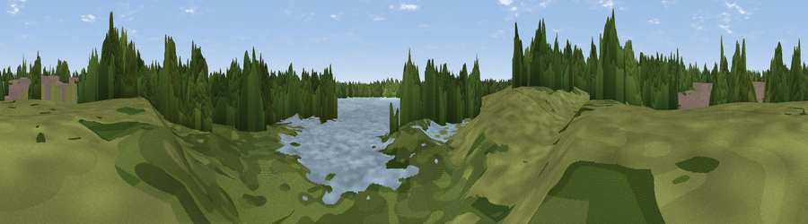

Viewpoint near Pennington
#44232 in England · top 94% of its area beats it · near PenningtonWhere it is
The exact computed spot (SJ 63854 99572). Click the marker for map links.
The view, rendered

A 360° render of this exact spot computed from the terrain model, tree cover and land cover — summer colours, afternoon light, calibrated against photographs of famous viewpoints. Real trees, hedges and buildings will differ in detail.
The panorama
Grey silhouette: terrain skyline in each direction (720 bearings, Earth curvature and refraction included). Dashed green: skyline with trees (+15 m) and buildings (+8 m) as obstacles. Blue strip: how far the ground is visible on each bearing.
Where the view opens
Wedge length = distance to the farthest visible ground on that bearing (vegetation-aware). Rings at 10, 25 and 50 km.
What fills the view
42% woodland · 27% water · 24% grassland · 6% built-up ·
Angular shares of the visible panorama (visual magnitude), not map area. Landscape diversity 0.55 (0–1 Shannon).
Key numbers
More beautiful places nearby
The staircase of upgrades: each row has a higher view potential than everything closer. Driving times are estimates from straight-line distance, calibrated against real road routing — check an actual route before setting out.
| Place | Direction | Drive | Score |
|---|---|---|---|
| Viewpoint near Lowton Common | NW · 1 km | ~3 min | 44.5 |
| Viewpoint near Hag Fold | NE · 6 km | ~13 min | 48.1 |
| Viewpoint near Culcheth | SSE · 6 km | ~14 min | 63.6 |
| Viewpoint near Billinge | W · 11 km | ~21 min | 68.0 |
| Billinge Hill | W · 11 km | ~22 min | 71.6 |
| Viewpoint near Far Moor | WNW · 12 km | ~23 min | 72.8 |
| White Brow | N · 13 km | ~24 min | 82.9 |
| Warton Crag | NNW · 75 km | ~98 min | 83.2 |
53.49160, -2.54627 · source: osm viewpoint · position refined by local search. Computed location — check access rights before visiting.